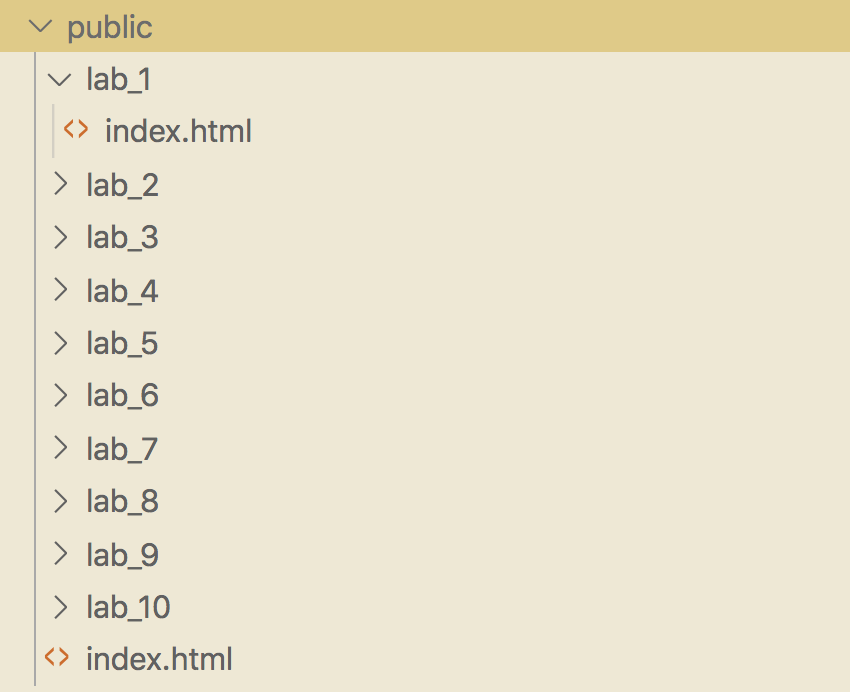
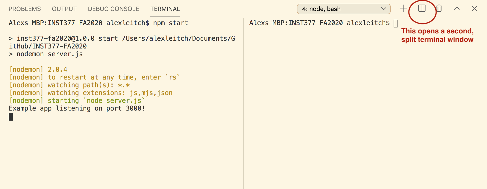
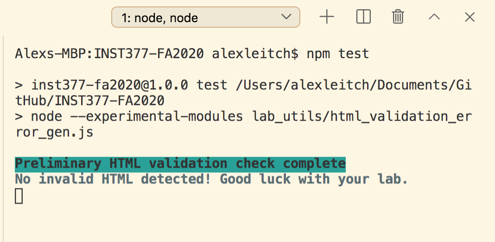
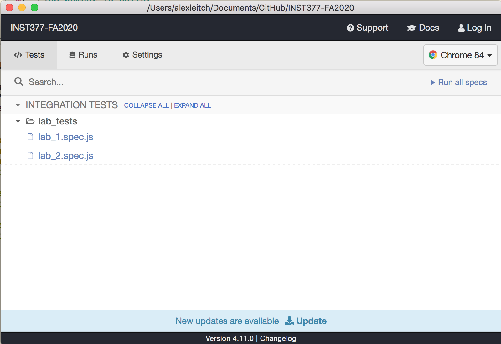
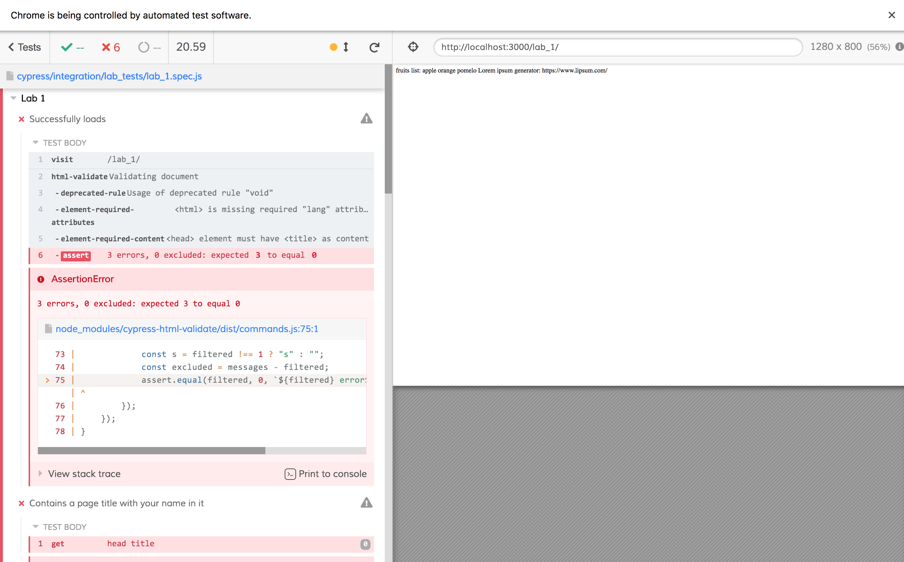
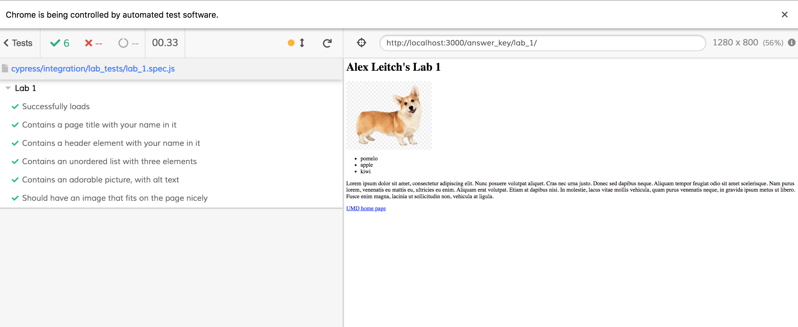

Working With Cypress To Test Your Labs
Testing Your Code
If you are working within the course repository, you should now have some
tools available to check whether your labs pass before submission.
-
You will be working in the public directory in your lab repository.
-
It should look like this:

-
Open two (2) terminal windows in VSCode.
-
In the first one, type npm start
It should
look like this:

-
In the second window, type npm test
It
should look like this:

(You haven't written any HTML yet, so of course it's valid!)
-
To TURN OFF your server or your testing environment, type
command-C on Mac or
follow the instructions
here at Stack Overflow. (Links to an external site.)
-
It should also open Cypress, a testing environment, for you.

Working With Cypress
This is a big course - apparently one of the largest here! - and it's
sometimes easier to ask the computer if your basic code is right than to
wait for someone to check their e-mail. Computers might be picky about
what they'll accept, but they don't get bored the way grading assistants
do. Therefore, this course uses something called "test-driven development"
to get through the early parts of the course. We use Cypress to automate
those tests, and the same ones are used to grade you later.
In Cypress, open the test for the lab you'd like to work on. For this
"getting started" guide, let's go with Lab 1.
-
Your lab's super busted! There's nothing really there yet. Your test
suite should look like this:

-
Your goal is to edit your lab in VSCode to answer the lab problems as
best you can.
-
Every time you think you've improved something enough in your lab, you
can save and re-test using Cypress.
-
A successful lab will have a bunch of green checkmarks, and pass all of
the written test cases.
-
It only tests what it tests, so you might do a bunch more or less work,
but the computer is only checking specific cases. This is a downside to
automated testing.
Successful Lab 1 Example
